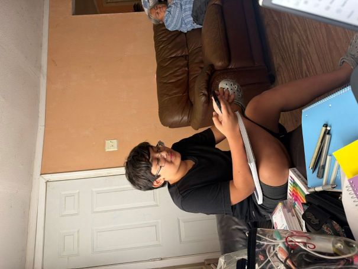
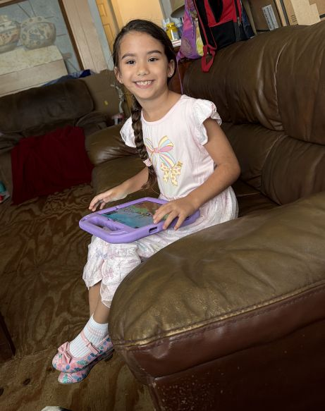

Welcome to My Reason Why
The Intial Spark
Let me tell you my reason why I decided to go back to school and major in Information Technology. This began when I was little and would have computer class in Junior High. This computer class was the only time I was able to be around computers as we didn't have one at home.With my computer class being after the older kids the keyboard covers were sometimes left on the keyboards and one day I asked what it was for and if I could use it.Once the teacher said yes it was a wrap. So everyday in computer I would teach myself to type using a keyboard cover on the keys. Though I was only in the 5th grade this was the start of the obession with typing and by the time I was in the highschool I was one of the fastest typers in my class.
When The Real Obssession Began
My mom and I used to watch Criminal Minds when I was younger. This is when I become interested in IT. One of the characters Penelope used to be a hacker but was caught by the FBI and instead of jail they offered her a job to help them catch the bad guys. So I used to pretend I was working for them and helping to catch the bad guys all the time. So basically because of Penelope Garcia in Criminal Minds I decided I wanted to work with computers and stop the hackers.
My Three Reasons
The Smartypants Child: Rickie (Monkey), 13 yrs old
Going back to school eventually went on the back burner. I got married and had three amazing children. The first as you may have guest is my smartypants, Monkey as I call him. He is the oldest at 13. When I tell you this kid is going places.At the age of 3, he could name all the dinosaurs scientifically and tell you what time period they lived in. I once asked him what he wanted to be when he grew up he said paleontologist, mind you he is 3, I asked him if he knew what they did. He proceeded to to give the definition to me. I have never questioned this kids abilities or knowledge again. He is already taking high-school credit classes. He is in all AP classes and his reason for that is because he likes the other kids better as they dont annoy him. He has created his own games and writes code when he can. He has heard me talk about my idea for a communitcations app for my middle son for years. He would always ask so are you going to make it, when you going to start it. My answer was always when I have time. Well this kid has me going back to school to prove to him that I did mean it when I said I would make it. He said I'm going to help you develope it. So I am doing this to make him proud of his momma.

The Biggest Reason Why:The Goofball; JD (Big Boi), 11 yrs old
My middle son JD, or as I call him Big Boi is the reason why I have finally take the step to going back to school and earning my degree. He was born with a genetic disorder called 49xxxy syndrome, which has caused him to have many developmental delays. One of those being his ability to speak. He is nonverbal and 11 yrs old and has only just now been able to get a communications tablet. So I hope to be able to learn enough to create an app that is taylored to him and others like him. The idea is to make it available to other families with nonverbal kids who arent able to get a communications tablet. It would allow parents to finally be able to communicate with their child. For me my son can sign however, he made his own language with the signs. Since he signs so fast and I don't always catch the signs, I'll ask his siblings what he said. If I ask him he will just look at me like I'm dumb and with a look that says you should have been paying attention mom.

The Little Princess: Celeste (Lil CeCe), 7 yrs old
The final munchkin is my preciuos daughter, Lil CeCe, though when she thingks she is grow will tell me mom its Celeste. This girl would have you believe that she isnt very smart. She likes to pretend not to know how to do homework even though she did it just fine on her tests and class work. She loves to go through her brothers phone to read his messages, which I find just hilarious. Sometimes I forget how old she is and when she starts to read over my shoulder I'm like you can read she goes I'm in the 1st grade of course I can. She will tell you how it is too, there is no filter on her shes very blunt. But she makes me want to prove to her that you can do anything if you put your mind to it.

Featured Worked
My First Web Page
My Reasons
- My Monkey
- My Big Boi
- Mi Princesa